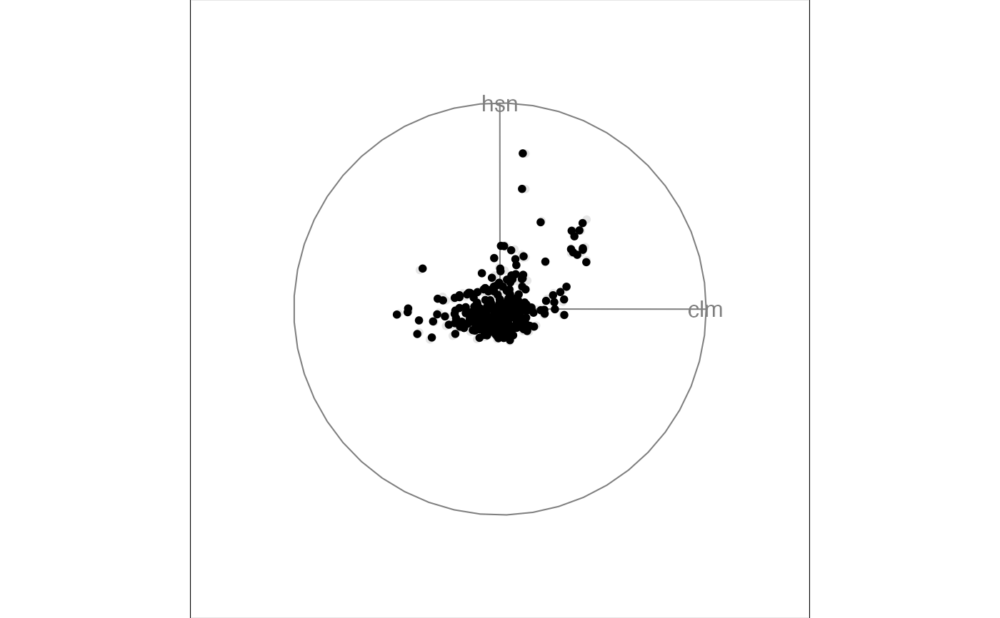
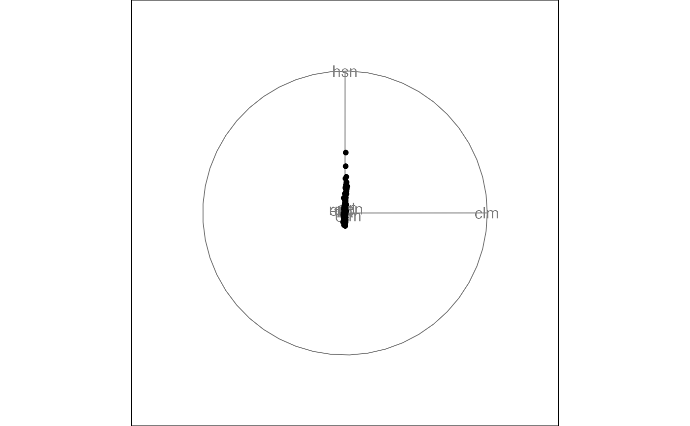

The "places data" were distributed to interested ASA members a few years ago so that they could apply contemporary data analytic methods to describe these data and then present results in a poster session at the ASA annual conference. Latitude and longitude have been added by Paul Tukey.
Details
____________________________________________________________________
The first dataset is taken from the Places Rated Almanac, by Richard Boyer and David Savageau, copyrighted and published by Rand McNally. This book order (SBN) number is 0-528-88008-X, and it retails for $14.95 . The data are reproduced on disk by kind permission of the publisher, and with the request that the copyright notice of Rand McNally, and the names of the authors appear in any paper or presentation using these data.
The nine rating criteria used by Places Rated Almanac are: Climate and Terrain Housing Health Care and Environment Crime Transportation Education The Arts Recreation Economics
For all but two of the above criteria, the higher the score, the better. For Housing and Crime, the lower the score the better.
The scores are computed using the following component statistics for each criterion (see the Places Rated Almanac for details):
Climate and Terrain: very hot and very cold months, seasonal temperature variation, heating- and cooling-degree days, freezing days, zero-degree days, ninety-degree days.
Housing: utility bills, property taxes, mortgage payments.
Health Care and Environment: per capita physicians, teaching hospitals, medical schools, cardiac rehabilitation centers, comprehensive cancer treatment centers, hospices, insurance/hospitalization costs index, flouridation of drinking water, air pollution.
Crime: violent crime rate, property crime rate.
Transportation: daily commute, public transportation, Interstate highways, air service, passenger rail service.
Education: pupil/teacher ratio in the public K-12 system, effort index in K-12, accademic options in higher education.
The Arts: museums, fine arts and public radio stations, public television stations, universities offering a degree or degrees in the arts, symphony orchestras, theatres, opera companies, dance companies, public libraries.
Recreation: good restaurants, public golf courses, certified lanes for tenpin bowling, movie theatres, zoos, aquariums, family theme parks, sanctioned automobile race tracks, pari-mutuel betting attractions, major- and minor- league professional sports teams, NCAA Division I football and basketball teams, miles of ocean or Great Lakes coastline, inland water, national forests, national parks, or national wildlife refuges, Consolidated Metropolitan Statistical Area access.
Economics: average household income adjusted for taxes and living costs, income growth, job growth.
Examples
head(places)
#> climate housingcost hlthcare crime transp educ arts recreat econ casenum
#> 1 521 6200 237 923 4031 2757 996 1405 7633 1
#> 2 575 8138 1656 886 4883 2438 5564 2632 4350 2
#> 3 468 7339 618 970 2531 2560 237 859 5250 3
#> 4 476 7908 1431 610 6883 3399 4655 1617 5864 4
#> 5 659 8393 1853 1483 6558 3026 4496 2612 5727 5
#> 6 520 5819 640 727 2444 2972 334 1018 5254 6
#> long lat pop stnum
#> 1 -99.689 32.559 110932 44
#> 2 -81.518 41.085 660328 36
#> 3 -84.158 31.575 112402 11
#> 4 -73.798 42.733 835880 35
#> 5 -106.650 35.083 419700 33
#> 6 -92.453 31.302 135282 19
animate_xy(places[, 1:9])
#> Converting input data to the required matrix format.
#> Using half_range 54468

